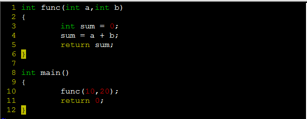
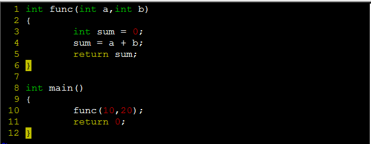

C语言栈与调用惯例
1、前言
最近在再看《程序员的自我修养》这本书，对程序的链接、装载与库有了更深入的认识。关于这本书的评价可以去豆瓣看看http://book.douban.com/subject/3652388/，强烈推荐给每一位程序员哈。今天看了第十章内存，主要讲的是栈和堆的管理。主要问题是：函数在栈中是如何布局的，如何通过缓冲区溢出来调用另外一个函数，即堆栈溢出攻击。
2、基本概念
栈（stack）：我第一次接触栈是从数据结构中，此时的栈是一种基本数据结构，栈的基本属性是先进后出（FILO)。
在计算机系统中，栈是一个具有先进后出属性的动态内存区域。程序可以将数据压入栈，也可以将数据从栈顶弹出。栈的增长方向是向下增长，即由高地址向低地址方向。在i386下，esp寄存器定位栈顶，ebp寄存器定位栈底（栈指针）。esp始终指向栈顶，随着函数的执行，esp不断的变化，而ebp固定在栈底位置不变。
3、栈的作用
用于维护函数调用的上下文，离开了栈函数调用没法实现。栈中保存了一个函数调用所需要的维护信息，通常称为堆栈帧或活动记录。
堆栈栈包括的内容：
（1）函数的返回地址和参数
（2）临时变量
（3）保存的上下文，例如函数调用前后保持不变的寄存器。
4、函数调用过程
（1）把所有的参数压入栈
（2）把当前指令的下一条指令的地址压入栈中（函数的返回地址）[可以实现堆栈溢出攻击]
（3）跳转到函数体执行
其中（2）（3）由指令call一起执行的。
例如下图所示的程序：
 
汇编代码如下图所示：


5、堆栈溢出攻击
通过堆栈溢出改变函数的返回地址，调用另外一个过程。例如下面的程序：


汇编程序如下所示：


程序输出结果如下所示：


冷静思考，勇敢面对，把握未来！